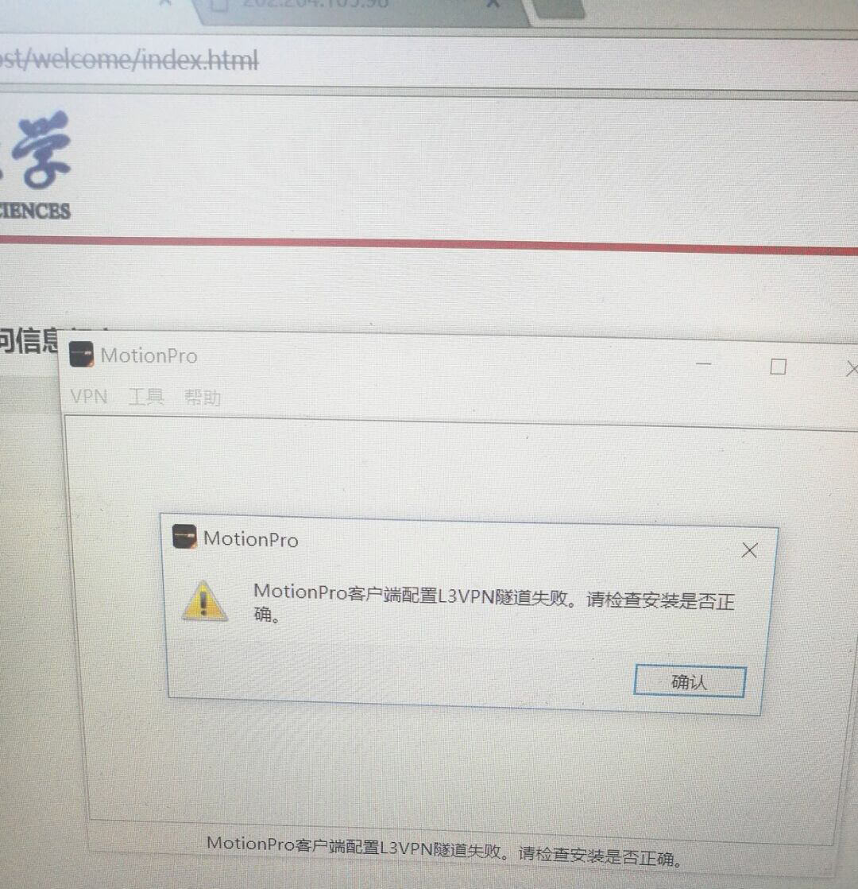
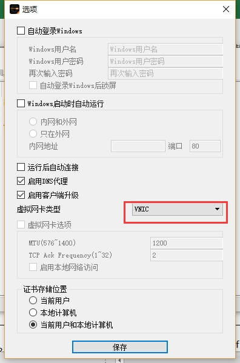

<!DOCTYPE html>
<html lang=>
  <head><meta name="generator" content="Hexo 3.8.0">
  <meta charset="UTF-8">
  <meta name="viewport" content="width=device-width, initial-scale=1, maximum-scale=1">
  <meta http-equiv="X-UA-Compatible" content="ie=edge">
  <meta name="description" content="">
  <meta name="keywords" content="">
  
    <link rel="icon" href="">
  
    
  <title>学校新版 VPN 无法链接的解决方案 | Tinko在地大的搬砖记录</title>
  <link rel="stylesheet" href="/style.css">
  <link rel="stylesheet" href="/lib/jquery.fancybox.min.css">
  <link rel="stylesheet" href="/lib/font-awesome.min.css">
</head>

<body>
  <header>
  <div class="header-container">
    <a class="logo" href="/">
      <span>Tinko在地大的搬砖记录</span>
    </a>
    <ul class="right-header">
      
        <li class="nav-item">
          
            <a href="/" class="item-link">HOME</a>
          
        </li>
      
        <li class="nav-item">
          
            <a href="/about" class="item-link">ABOUT</a>
          
        </li>
      
        <li class="nav-item">
          
            <a href="/archives" class="item-link">ARCHIVES</a>
          
        </li>
      
        <li class="nav-item">
          
            <a href="/tags" class="item-link">TAGS</a>
          
        </li>
      
    </ul>
  </div>
</header>

  <main id="post">
  <div class="content">
    <article>
        <section class="content markdown-body">
          <h1>学校新版 VPN 无法链接的解决方案</h1>
          <div class="post-meta">
            <i class="fa fa-calendar" aria-hidden="true"></i> <time>2018-07-05 10:00:00</time>
            
            
              | 
                  <i class="fa fa-tag" aria-hidden="true"></i>
                
               
  <a href="/tags/#网络中心" class="tag">网络中心</a>


            
          </div>
          <p>仅针对 Windows 10 下 VPN 客户端出现 MotionPro 客户端配置 L3VPN 隧道失败的解决方案</p>
<p></p>
<p>出现此情况的根本原因是 Windows 10 新版本与学校所提供的旧版客户端不兼容的问题</p>
<p>解决此问题有两种方案</p>
<ul>
<li>自行寻找 1.1.10 版本的客户端</li>
<li>进入 <code>VPN</code> 菜单，选择<code>设置</code>，将 <code>SSTP</code> 下拉菜单修改为 <code>VNIC</code></li>
</ul>
<p>修改位置已在下图圈出，图片源 <a href="https://answers.microsoft.com/zh-hans/windows/forum/windows_10-performance/%E6%9B%B4%E6%96%B01803%E4%BB%A5%E5%90%8Evpn/030f8809-6c8c-41d2-a538-172042919c75" target="_blank" rel="noopener">Microsoft Community</a><br></p>

        </section>
    </article>
    
        
  </div>
  <aside>
    
  </aside>
</main>


  <footer>
  <div class="copyright">
    <div>
      &copy; 2018 | Powered by <a href="https://hexo.io" target="_blank">Hexo</a>&nbsp
    </div>
    <div>
      Theme by <a href="https://github.com/lewis-geek/hexo-theme-Aath" target="_blank">Aath</a>
    </div>
  </div>
</footer>


<script src="/lib/jquery.min.js"></script>
<script src="/lib/in-view.min.js"></script>
<script src="/lib/lodash.min.js"></script>
<script>
  var isDown = true
  var oldY = 0
  inView.offset(50)

  document.body.addEventListener('touchstart', function(){});
  
  window.addEventListener('scroll', _.throttle(e => {
    var currentY = window.scrollY
    if((oldY - currentY) < 0) {
      isDown = true
    } else {
      isDown = false
    }
    oldY = currentY
  }, 250))

  $("article img").each(function() {
      var strA = "<a data-fancybox='gallery' href='" + this.src + "'></a>";
      $(this).wrapAll(strA);
  });

  $('.toc-link').each(function() {
      var href = $(this).attr("href");
      
      inView(href).on('exit', () => {
        if (isDown) {
          handleActive(href)
        }
      })

      inView(href).on('enter', () => {
        if (!isDown) {
          handleActive(href)
        }
      })

      this.onclick = function(e) {
        var pos = $(href).offset().top - 10;
        $("html,body").animate({scrollTop: pos}, 300);
        setTimeout(() => {
          handleActive(href)
        }, 350)
        return false
      }
  })

  function handleActive(href) {
    document.querySelectorAll('.toc-link').forEach(elm => {
      elm.classList.remove('active')
    })
    document.querySelector(".toc [href='"+ href +"']").classList.add('active')
  }
</script>
<script src="/lib/jquery.fancybox.min.js"></script>


</body>
</html>
